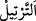
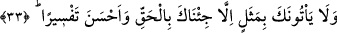
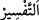
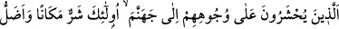
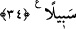

boşansaydı, peyder pey yağdığındaki gibi ekinler ondan faydalanamaz, büyüyüp
yetişemezdi.
“Ve onu tane tane (ayırarak) okuduk.” “
” ayırmak ve nefesi kesmeden hafif bir
sükût ile bir kelimenin ardından diğerinin gelmesi demektir. Asıl anlamı dişleri
birbirinden ayırmaktır. Buna göre mânâ şöyledir: Biz sana Kur’ân’ı parça parça, belirli
bir süre içerisinde mesele mesele hâlinde yirmi veya yirmi üç senede indirdik ve
okuduk.
33. Onların sana getirdikleri hiçbir temsil yoktur ki, (onun karşılığında) sana
doğrusunu ve daha açığını getirmeyelim.
“Onların sana getirdikleri hiçbir temsil” bâtıllıkta âdeta bir mesel olan, seni ve
Kur’an’ı lekelemek için söyledikleri hiçbir ilginç ve garip soru “yoktur ki, (onun
karşılığında) sana doğrusunu” yâni hak, sâbit, onların sorularını ibtal eden,
dedikoduları ortadan kaldıran cevabı “ve daha açığını” hakkı, doğruyu ve hikmetin
gereği olanı daha güzel açıklayıp izah edeni “getirmeyelim.” Ey Muhammed! Müşrik
Araplar sana niçin bir temsil getiremezler? Yâni senin peygamberliğini yalanlama ve
Kur’an’ı ta‘n etmek için söz söyleyemezler.
Bu onun haddi zâtında olabilecek güzelliğin en son noktasında olduğu mânâsınadır,
yoksa onların getirdikleri temsilin genel olarak güzel olduğu, bunun da ondan daha güzel
olduğu anlamında değildir. Çünkü onların soruları bâtıllıkta bir meseldir. Onun güzel
olması nasıl mümkün olsun? Ancak olsa olsa onların iddiâlarına göre güzel ve iyi
olabilir. Yâni onların iddiâsına göre soru güzel olur da cevap daha güzel oldu denilir.
“
”, kapalı olan bir şeyi açmak demektir.
Yâni onlar sana herhangi bir durumda sana bir mesel getirdiklerinde bizim sana hakkı
getirme hal ve durumumuzun benzeri yoktur, eşsizdir. Bu âyet metin itibariyle kâfirlerin
sorularının tamamının bâtıl olduğunu, bunlara verilen cevapların tamamının ise doğru
olduğunu ifâde etmektedir. Âyet işâretiyle de onların sorularının da bâtıl olduğunu haber
vermektedir. Çünkü Kur’ân’ın inzal edilmesi parça parça, peyder pey olmasaydı bu
çirkin teklif ve önerileri ibtal etmek de mümkün olmazdı. Denilir ki: “Her peygambere
kavmi bir söz söylediğinde bizzat o peygamber cevap veriyordu. Fakat Rasûlullah’a
(s.a.)’e kavmi bir şey söylediğinde ise Allah onlara cevap vermektedir.